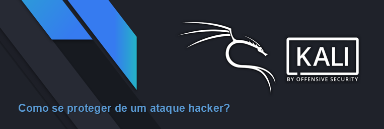

Redefinir senhas regularmente, bloquear dispositivos quando necessário e manter o software atualizado são medidas de segurança amplamente adotadas. No entanto, muitas vezes a segurança de uma aplicação é negligenciada, tornando-a vulnerável.
Aplicações web estão frequentemente expostas a ameaças. Essas vulnerabilidades podem surgir de diversos fatores, como erros de codificação, configurações inadequadas de servidores web ou falhas no design da aplicação.